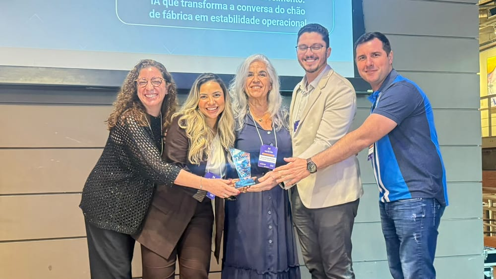
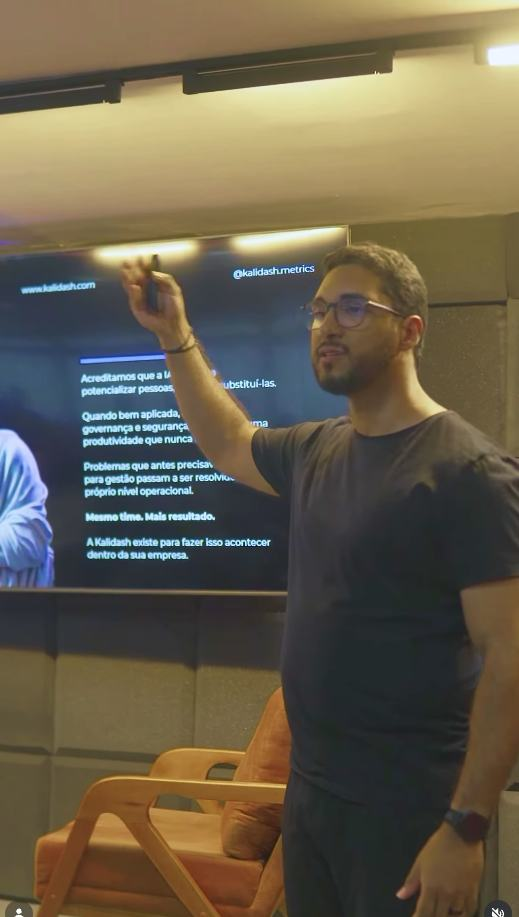
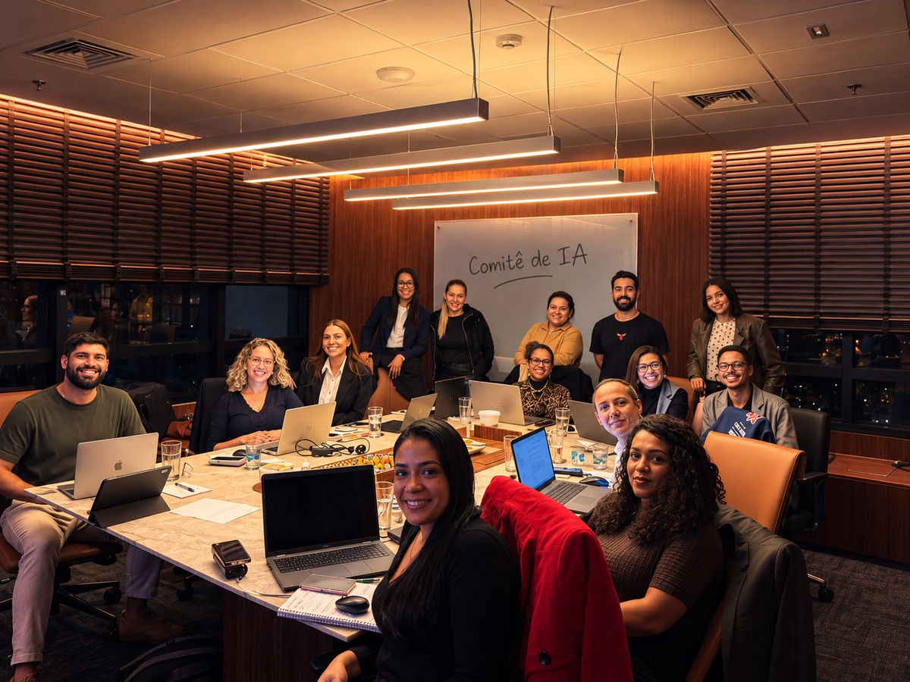
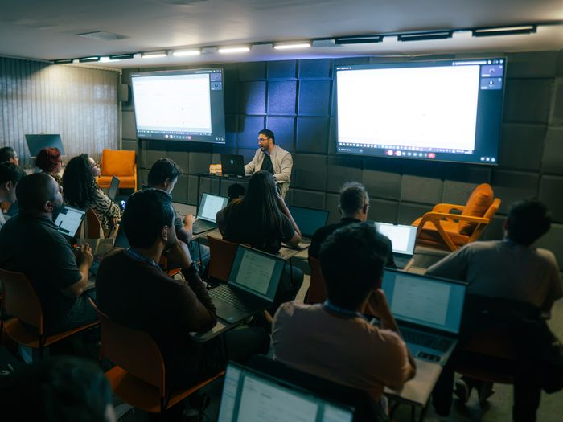
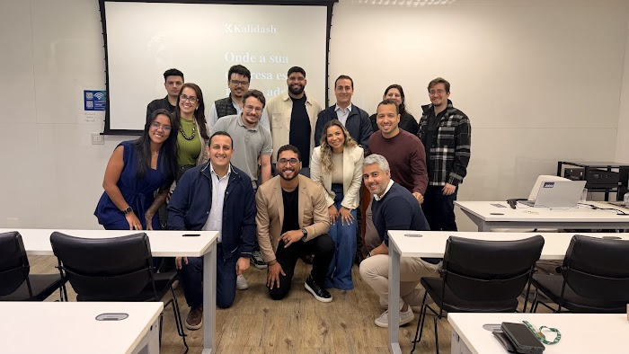

Cases · 1 min · 01 de out. de 2026
Resumo fictício do artigo 1 para teste de layout. Este resumo é um pouco mais longo para o destaque, com duas ou três linhas de texto, só para ver a medida.
Equipe Kalidash
Ler artigo →

Posts · 1 min · 02 de out. de 2026
Resumo fictício do artigo 2 para teste de layout.
Autor de Teste
Ler artigo →

Posts · 1 min · 03 de out. de 2026
Resumo fictício do artigo 3 para teste de layout, com uma segunda frase para ocupar mais de uma linha.
Equipe Kalidash
Ler artigo →

Cases · 1 min · 04 de out. de 2026
Resumo fictício do artigo 4 para teste de layout.
Autor de Teste
Ler artigo →
Posts · 1 min · 05 de out. de 2026
Resumo fictício do artigo 5 para teste de layout.
Equipe Kalidash
Ler artigo →

Advisory · 1 min · 06 de out. de 2026
Resumo fictício do artigo 6 para teste de layout.
Autor de Teste
Ler artigo →

Posts · 1 min · 07 de out. de 2026
Resumo fictício do artigo 7 para teste de layout.
Equipe Kalidash
Ler artigo →